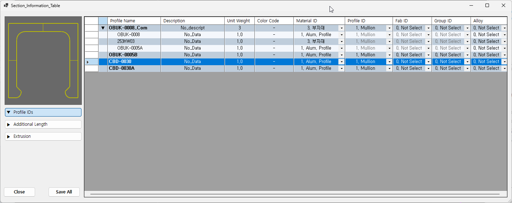

Dtable
선택한 Section Surface 들의 단면 정보를 하나의 표로 모아서 보고 한 번에 수정하는 창을 엽니다. 프로파일을 하나씩 Pname 으로 열어 고치는 대신, 여러 단면의 이름·중량·ID·추가길이·압출 정보를 표에서 비교하며 편집할 수 있습니다.
| 컬럼 | 설명 |
|---|---|
| Profile Name | 프로파일 이름입니다. 도면과 리스트의 형상명으로 사용됩니다. |
| Description | 프로파일 설명입니다. |
| Unit Weight | 미터당 단위 중량(Kg/M)입니다. 부재 리스트의 중량 계산에 사용됩니다. |
| Color Code | 표면 색상 코드입니다. |
Profile Name 머리글을 클릭하면 이름순으로 정렬됩니다. 저장은 화면에 보이는 행 순서가 아니라 각 행이 들고 있는 숨은 객체 식별자를 기준으로 하므로, 정렬한 뒤에 저장해도 값이 엉키지 않습니다.
ComP 로 묶은 합성 프로파일은 표에서도 한 덩어리로 나옵니다.
먼저 합성 줄이 서고, 그 아래에 들여쓴 구성원 줄들이 붙습니다.

| 표시 | 뜻 |
|---|---|
| 굵은 이름 | 윗줄입니다 — 합성 이름과 보통 단면 이름. |
| 들여쓴 이름 | 바로 위 합성의 구성원입니다. |
▼ / ▶ | 합성 줄 왼쪽의 삼각형입니다. 누르면 그 묶음의 구성원 줄을 접거나 폅니다. 칸 제목을 누르면 모든 합성을 한 번에 접거나 폅니다. |
| 흐린 글자 | 그 칸은 잠겨 있어 고칠 수 없습니다. |
| 줄 | 고칠 수 있는 것 |
|---|---|
| 합성 줄 | 합성 이름 · Description · Unit Weight · Color Code · Material ID · Alloy 그리고 공용 항목 — Profile ID · Fab ID · Group ID · Additional Length · Extrusion |
| 구성원 줄 | 그 구성원의 이름 · Description · Unit Weight · Color Code · Material ID · Alloy 공용 항목은 잠깁니다(글자가 흐림). |
Dtable 을 열면 합성으로 펴지지 않고 보통 줄로 섭니다.
합성 값을 고치려면 묶음 전체를 선택하십시오.Dtable 에서도 고칠 수 있습니다. 묶고 푸는 것은 ComP · XcomP 입니다.컬럼이 많으므로 나머지 항목은 미리보기 아래의 세 개의 토글 버튼으로 묶여 있습니다.
버튼을 누르면 해당 그룹의 컬럼이 펼쳐지거나(▼) 접힙니다(▶).
| 그룹 | 포함 컬럼 |
|---|---|
| Profile IDs (기본 펼침) | Material ID, Profile ID, Fab ID, Group ID, Alloy — 부재의 분류 ID 입니다. |
| Additional Length | Add.Len (T/L), Add.Len (B/R) — 바 양 끝의 추가 길이입니다. Mullion 이면 위/아래, Transom 이면 좌/우 끝을 뜻합니다. |
| Extrusion | Ext Length / Ext Interval / Ext Qty / Equal 를 (T/L) 과 (B/R) 두 벌로 가집니다. 상부·좌측과 하부·우측의 압출 정보입니다. |
| 항목 | 설명 |
|---|---|
| 저장 | Save All 을 누르면 표의 모든 행을 각 단면의 데이터로 저장합니다. 실제로 값이 바뀐 단면은 명령창에 [프로파일 이름]의 data를 저장했습니다. 로 표시됩니다. |
| 치수 스타일 | 명령이 끝나면 명령 실행 전에 사용하던 치수 스타일로 되돌립니다. 창을 저장 없이 닫아도 마찬가지입니다. |
| 모델 형상 | 바뀌지 않습니다. 단면에 기록된 데이터만 갱신합니다. |
| 명령어 | 설명 |
|---|---|
| Pname | 단면 하나의 프로파일 정보를 입력·수정합니다. Dtable 은 이 정보를 여러 단면에 대해 표로 다룹니다. |
| ComP · XcomP | 프로파일 여러 개를 하나의 합성 프로파일로 묶고, 다시 풉니다. |
| PDlist | 단면 데이터를 리스트로 출력합니다. |
| PPlist | 프로파일 목록을 출력합니다. |
| SSP | 작성된 Section Profile 그룹을 선택합니다. |
선택한 객체에 SectionCustomData 가 없습니다 로 알리고 창을 열지 않습니다. 먼저 Pname 으로 단면 정보를 입력하십시오.